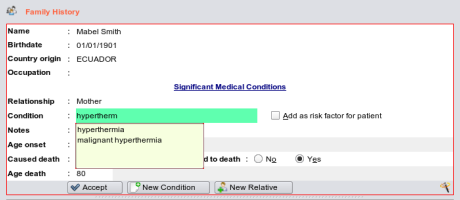

The Edit Area

Please note - this is
the most important part of the entire help file
You should read this until you fully understand it. Using the editing area's effectively
will save you buckets of time and learning to use the keyboard will mean
**you very rarely have to use the mouse***.
Edit Area Principals
- Add New is the Default State of an editing area i.e it is to be ready to accept new data. When a section first loads, or after a save, the next action
expected of the user is that he will want to add more data. Clearing the editing area, by using a 'Clear' or 'New..' button
also re-sets the editing area to its expectant state.
- Concept of Focus - Whatever is the area of the screen being used for data entry it 'has focus' and in EasyGP if this is a textbox then focus will
be indicated by a green backcolor(configurable), or, if a drop down combo box or button, by some visible black outlining of
the control.
- Popup Lists - will be presented where information exists to assist you in auto-completing data, use the down arrow key to scroll to the list not the mouse
and the enter key to accept the data.
- Data is Validated prior to save and you will be prompted for any missing data but not all data entry fields are mandatory.
- Save (F12) immediately saves the data to the database backend and any relevant list underneath the editing area refreshed.
- EditArea's can be Partially cleared for example adding multiple conditions to the one family member.
- Editing area's within an Edit area can exist, for example in the contacts database and operate in principal the same as their parent except internal lists are not
saved until the entire editing area content is saved via the Save button.
- Editing existing information in the lists is done by either clicking on the item in the list, which in some sections will automatically load the data back into the editing area
as an implicit edit, or by right mouse clicking on the list and selecting 'Edit'.
- Auxillary data entry area's may exist within an editing area such as a word processor in say a letter writer.
- Data is Deleted by seleting the data item from the list underneath the editing area and selecting Delete from the popup menu.
- GUI elements such as textboxes and lists are adjustable by grabbing the horizontal and vertical sliders and shutdown will save this automatically.
- Your actions will be audited - no matter what you do, an audit trail is kept of everything you add and delete or alter and you may be asked for an explanation.
Key Usage Defaults
- ENTER or TAB will move the focus to the next control in the tab order, be it textbox or combobox etc and implicitly accepts the data
in the textbox or combobox or checkbox. Hitting enter in a textbox will move you to the next one (although some may be
skipped if they are rarely used) right up to the Save button.
- DOWN ARROW from a textbox will move the cursor onto a popup list if the list is visible
- SPACEBAR when a combobox has focus will drop down the list for that combo, or if a checkbox will check or uncheck the box